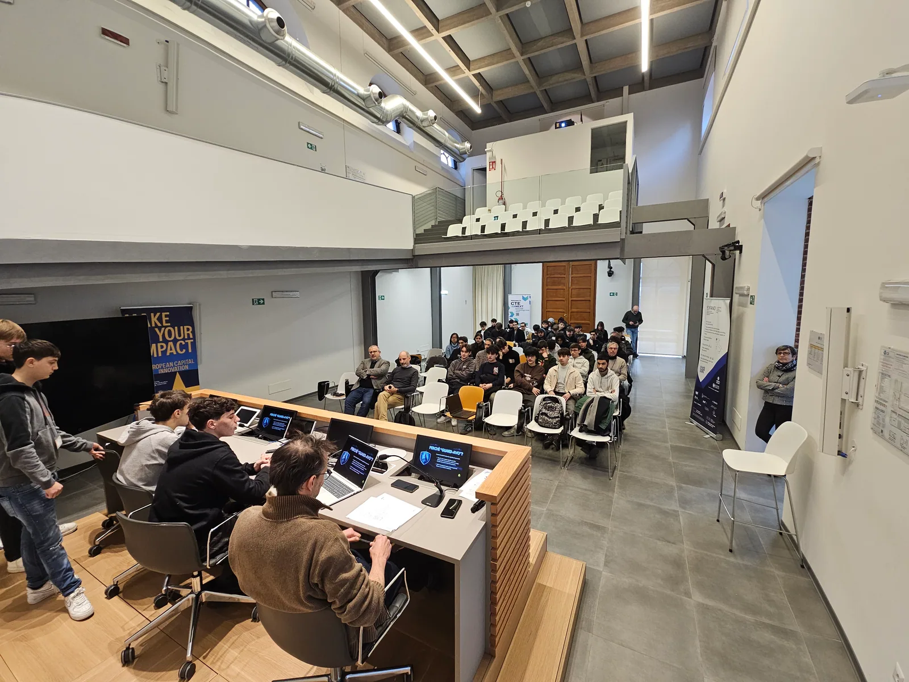
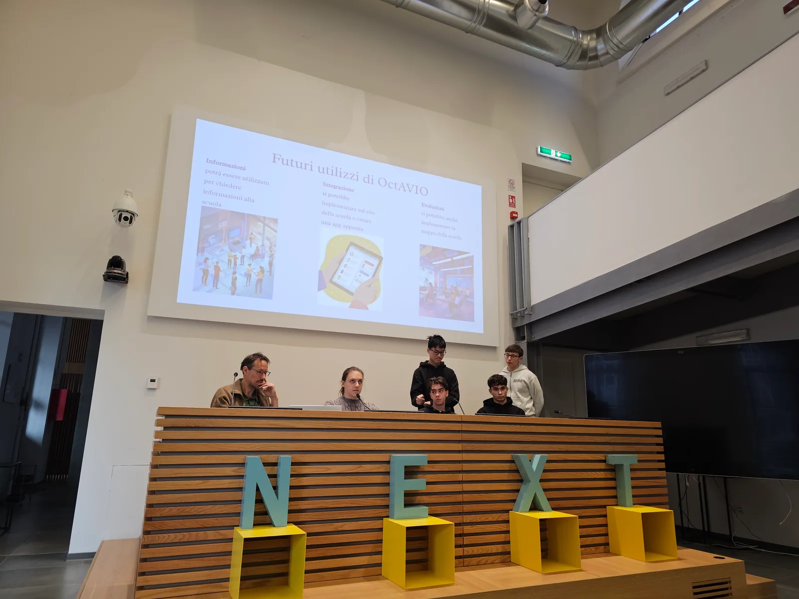

GustAvo — Chatbot per orientarsi all’IIS Avogadro di Torino
Nato in CSI Piemonte, cresciuto in classe.
Dagli studenti, per gli studenti: GustAvo aiuta ragazzi e famiglie a scegliere e conoscere l'IIS Amedeo Avogadro di Torino. Scopri indirizzi di studio, iscrizioni e servizi scolastici, trova aule e laboratori e consulta gli orari della segreteria.

